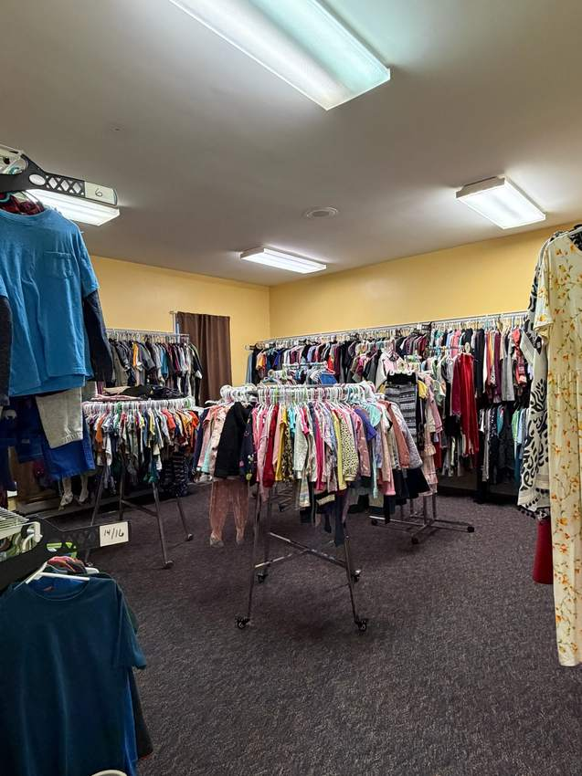
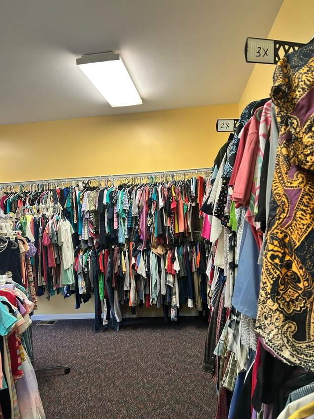
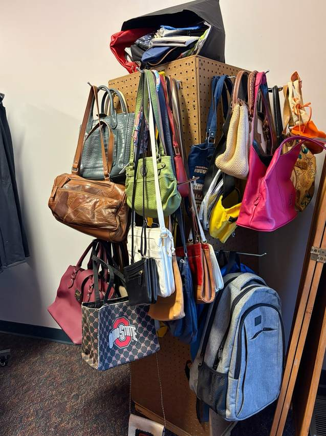
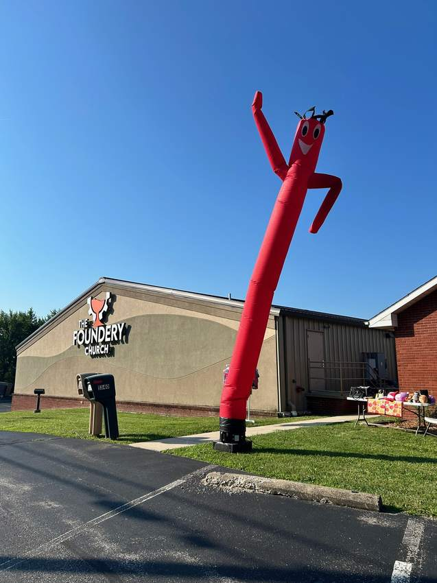
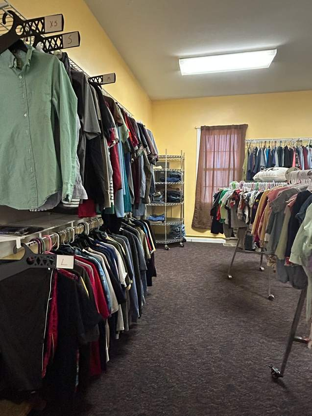
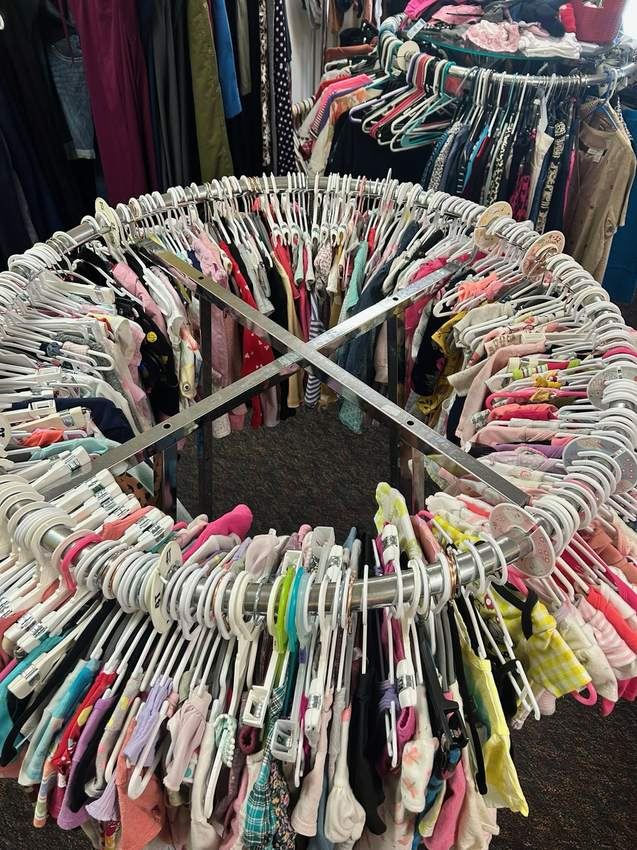
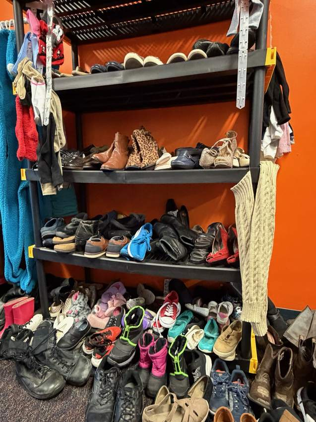
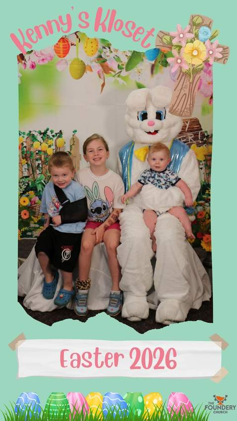
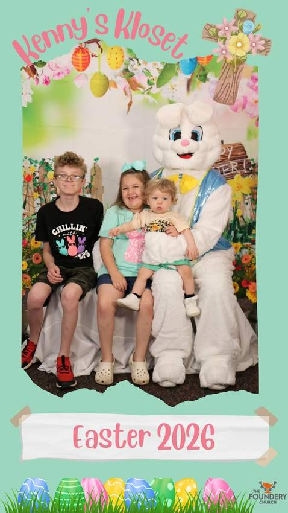

I want to shop
Everything is $1 per item. Bring cash and visit us on the 1st and 3rd Saturday from 8 AM–12 PM.
Plan My VisitClothes, shoes, bags, and more for only $1 per item. Cash only. Everyone welcome. Dignity, kindness, and affordable essentials for Wellsburg, Brooke County, and the Ohio Valley.
Kenny’s Kloset is open the 1st and 3rd Saturday each month from 8 AM–12 PM.
Plan Your VisitWhether you need to shop, donate, volunteer, or ask for something specific, this is the fastest place to start.
Everything is $1 per item. Bring cash and visit us on the 1st and 3rd Saturday from 8 AM–12 PM.
Plan My VisitClean, in-season clothes and shoes help keep the racks full and prices affordable for local families.
View GuidelinesVolunteer, share the site, or message us if your family, school, church, or neighbor needs support.
Message UsThese photos show the heart of the ministry — full racks, organized sizes, shoes, bags, kids’ clothes, and a place built to serve neighbors with dignity.



Rising costs shouldn’t steal anyone’s dignity. After hearing a challenge to “use the gifts God gave you,” Barbra and Jay Beatty turned their retail know-how into a ministry.
Kenny’s Kloset honors the legacy of the late Kenneth “Kenny” Hart — beloved Brooke County teacher, principal, and coach — by offering affordable essentials to every neighbor, no strings attached.

Selection changes as donations come in, but the mission stays the same: keep useful essentials affordable and welcoming for everyone.



Your donations keep Kenny’s Kloset stocked, affordable, and welcoming. These guidelines help our volunteers sort faster and keep the ministry useful.
Need clothes for a job interview, school, church, funeral, formal event, emergency situation, or a child’s upcoming need? Message Kenny’s Kloset and our volunteers will do their best to help you find options.
Kenny’s Kloset also creates moments of connection — family photos, seasonal outreach, and reminders that people are seen, welcomed, and valued.

Community photo moments help families make memories while connecting with the ministry.

Every event is another opportunity to welcome neighbors and share practical kindness.
The heart behind Kenny’s Kloset is simple: use what God has placed in your hands to serve the people right in front of you.

The Lord laid it on my heart that this was something I could do. That this was a way I could give back.— Barb Beatty, Founder
Play it once and you’ll be singing it all day. Turn up the volume, share it with a friend, and help people remember Kenny’s Kloset.
If the player does not load, open the jingle directly or share this page with someone who needs to know about Kenny’s Kloset.
Kenny’s Kloset is a ministry of The Foundery Church, where faith meets action in our local community. Explore more of what our church is doing for Wellsburg and beyond.
Here are the answers most people need before visiting, donating, or sharing Kenny’s Kloset.
Yes. Clothes, shoes, bags, and similar items are $1 per item. Kenny’s Kloset is cash only.
No. Everyone is welcome. You do not need to be a church member to shop, donate, or ask questions.
Kenny’s Kloset is open the 1st and 3rd Saturday each month from 8 AM–12 PM.
Yes. Clean, in-season clothing and shoes are welcome during donation drop-off hours.
Only if they are new. Used socks and underwear cannot be accepted.
Message Kenny’s Kloset on Facebook for job interview clothes, school needs, formal events, or emergency situations.
Everyone is welcome. Bring cash, browse the racks, and take what you need for only $1 per item.
1340 Washington Pike
Wellsburg, WV